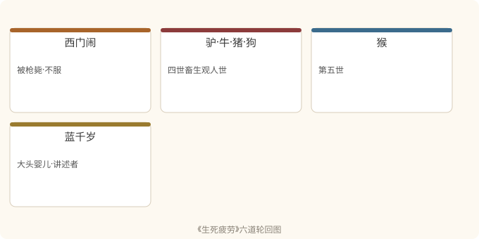

生死疲劳
一、基本信息
| 作者 | 莫言 |
|---|---|
| 成书/出版 | 2006年出版（Britannica：Shengsi pilao (2006; Life and Death Are Wearing Me Out)） Mo Yan — Encyclopaedia Britannica（百科全书） |
| 国别/地区 | 中国 |
| 时代 | 现当代 · 当代 |
| 体裁 | 长篇小说 |
| 语言 | 汉语（白话·章回体） |

《生死疲劳》六道轮回图（主题·结构图）
二、创作背景
Britannica（Mo Yan 条）：later works included the novels Tanxiang xing (2001; Sandalwood Death), Shengsi pilao (2006; Life and Death Are Wearing Me Out), and Wa (2009; Frog)——本作即其中之一。
题名出自佛经『生死疲劳，从贪欲起』（通说待核）。
三、内容脉络
西门闹在土改中被枪毙，不服而六度轮回：驴、牛、猪、狗、猴，最后为大头婴儿蓝千岁（通说）。
以动物之眼观1950—2000年中国农村土地关系变迁——从土改、合作社到改革开放（通说）。
叙事者轮换（蓝千岁、蓝解放、莫言），章回体目录（通说）。
四、主要人物表
| 人物 | 身份 | 说明 |
|---|---|---|
| 西门闹 | 地主·轮回者 | 六道轮回的冤魂 |
| 蓝解放 | 西门闹之子（随母姓） | 叙事者之一 |
| 洪泰岳 | 村支书 | 坚定的合作社带头人（通说） |
| 蓝脸 | 单干户 | 全国唯一单干户（通说） |
五、主题与艺术特点
- 农民与土地：50年土地制度变迁（通说）。
- 轮回视角：以畜生之眼看人世——降低姿态的观察（通说）。
- 章回体与说书传统的当代复活（通说）。
六、影响与评论
- Britannica：列为莫言后期代表作之一（Shengsi pilao (2006; Life and Death Are Wearing Me Out)）。
Mo Yan — Encyclopaedia Britannica（百科全书） - Britannica：2012年诺贝尔文学奖；其小说 always marked by an impassioned humanism（始终带着炽热的人道主义——Britannica）。
Mo Yan — Encyclopaedia Britannica（百科全书）
七、阅读建议
难点
- 章回体回目与说书腔。
- 轮回视角的叙事者切换。
- 高密东北乡地理与人物世系——先画谱系图。
- 《生死疲劳》（作家出版社，通说待核）。
先读《红高粱家族》建立高密东北乡印象 → 本作 →《蛙》（通说对照）。
八、待核实
- 题名佛经出处（『生死疲劳，从贪欲起。少欲无为，身心自在』——《佛说八大人觉经》通说）待核。
- 红楼层奖等获奖记录待核。
- 六道轮回的动物顺序细节待核。
本页主要来源
莫言的其他收录作品：红高粱家族